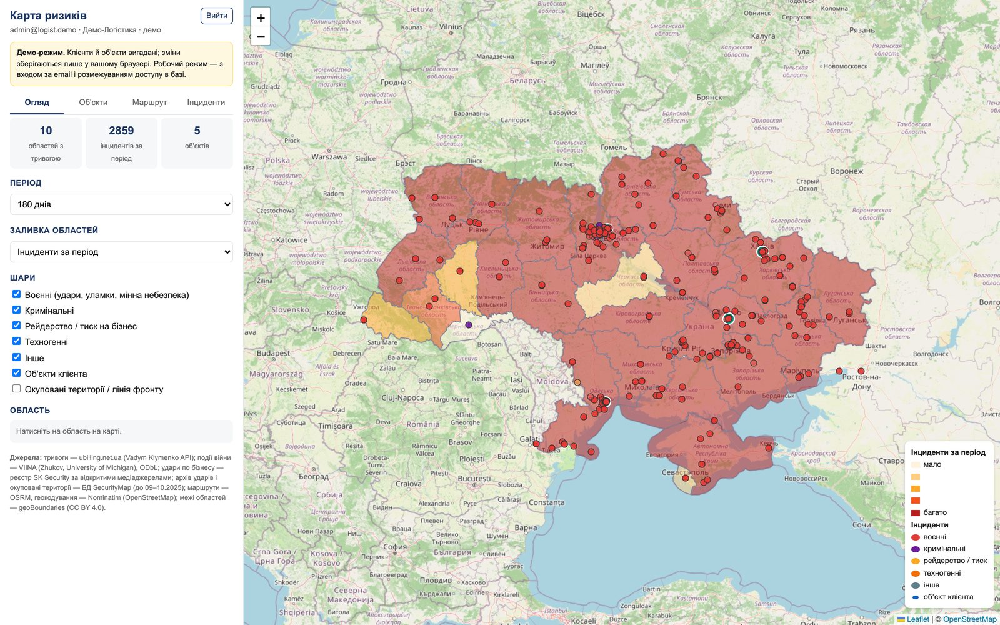

#1
Ваші об'єкти на карті
Офіси, склади, магазини, виробництва, термінали, житло персоналу. Ви самі додаєте адреси, задаєте радіус моніторингу і критичність об'єкта.
Офіси, склади, магазини і виробництва — на одній карті з обстрілами, повітряними тривогами, криміногенною обстановкою і тиском на бізнес. Оцінка ризику для кожного об'єкта, довідки для службових відряджень і сповіщення від аналітиків SK Security.

Відкриті карти показують загальну картину війни. Карта ризиків SK Security відповідає на питання вашої компанії: що відбувається поруч з нашими об'єктами і маршрутами — і що з цим робити.
Кожен клієнт бачить лише свої об'єкти. Дані — з відкритих джерел, реєстрів і власного моніторингу SK Security з перевіркою аналітиками.
Офіси, склади, магазини, виробництва, термінали, житло персоналу. Ви самі додаєте адреси, задаєте радіус моніторингу і критичність об'єкта.
Рівень — низький, помірний, високий чи критичний — із зрозумілими причинами: відстань до лінії фронту, події в радіусі, тривоги, криміногенність області. Звіт PDF для керівництва.
Щоденні події війни з прив'язкою до населених пунктів, реєстр ударів по бізнес-об'єктах SK Security, окуповані території і лінія фронту, архів інтенсивності ударів з 2022 року.
Поточний стан тривог по областях і статистика тривог за 30 днів — щоб планувати роботу персоналу і логістику.
Рівень злочинності в регіоні порівняно із середнім по країні, розбої, підпали, напади на підприємців, рейдерство, обшуки і реєстраційні атаки поблизу ваших об'єктів.
Подія в радіусі вашого об'єкта або на маршруті запланованої поїздки — куратор отримує сповіщення і зв'язується з вами. Для преміум-клієнтів — цілодобово.
Відкрита стрічка: удари й атаки з прив'язкою до населених пунктів, напади, викрадення, підпали, рейдерство. Лише конкретні події з місцем — без політичних новин, заяв, реакцій і оглядів. Оновлюється автоматично кожні 6 годин.
Щопонеділка — аналітичний «Огляд ситуації з безпекою» за минулий тиждень, підготовлений під вашу компанію:
Ваш співробітник вводить маршрут — система будує дорогу і формує документ у форматі SK Security «Рекомендації для планування та підготовки до службових відряджень»:
А щотижня — актуальні рекомендації по всіх регіонах з картою ризиків відносно саме ваших об'єктів.
Показуємо кабінет на прикладі вашої галузі і регіонів, відповідаємо на питання.
Вносимо ваші об'єкти (або ви самі), задаємо радіуси, створюємо доступи співробітникам.
Ви бачите обстановку і ризики, формуєте довідки для відряджень, куратор SK отримує сповіщення про події поруч.
Кожне джерело має свій ритм оновлення і свій рівень перевірки. У кабінеті при кожній події видно, з якого вона джерела.
| Що на карті | Джерело | Як збираємо | Оновлення | Перевірка |
|---|---|---|---|---|
| Повітряні тривоги по областях, статистика за 30 днів | Відкритий API тривог | Автоматичний збирач | кожні 2 хв | автоматично |
| Удари й атаки РФ з прив'язкою до населеного пункту | VIINA — набір подій війни Мічиганського університету (ODbL), побудований на повідомленнях українських ЗМІ | Автоматичний відбір: лише атаки РФ по підконтрольній території; одна подія — один запис | щодня | автоматичний фільтр; позначка «VIINA» |
| Удари по бізнес-об'єктах: склади, виробництва, логістика, торгівля, енергетика, зв'язок | «Огляд ситуації з безпекою» SK Security: зведення Генштабу і Повітряних сил, ОВА, ДСНС, заяви компаній | Аналітик SK складає хронологію і карту тижня | щопонеділка | аналітик SK; позначки достовірності [П] [?] [З] |
| Кримінальні інциденти і тиск на бізнес: напади на підприємців, розбої, підпали, викрадення, вимагання, рейдерство | «Інформаційний огляд» SK Security: Нацполіція, БЕБ, НАБУ, прокуратура, регіональні й ділові ЗМІ | Кожна новина класифікується: на карту — лише конкретна подія з місцем в Україні | щотижня | аналітик SK перевіряє таблицю розбору |
| Окуповані території, лінія фронту, архів інтенсивності ударів 2022–2025 | Архів SecurityMap | Імпорт шарів | архів | — |
| Криміногенність області на 10 тис. населення | Єдиний звіт про кримінальні правопорушення (Офіс Генпрокурора) | Завантаження звітності по областях | щомісяця · підключається | офіційна статистика |
| Рівні ризику для відряджень по областях | Експертна оцінка SK Security | Аналітик оновлює на сторінці «Доступи» | щотижня | аналітик SK |
Межі адмінодиниць — geoBoundaries (CC BY 4.0); підкладка карти — © OpenStreetMap. Оцінки ризику базуються на відкритих джерелах і не є офіційним прогнозом.
Вартість залежить від кількості об'єктів, регіонів і швидкості реагування. Розрахуємо під вашу компанію.
Карта показує лише безпекові події, що можуть зачепити ваші об'єкти, людей і логістику. Заяви політиків, дипломатія, вибори, коментарі й аналітика на карту і в стрічку не потрапляють — фільтр застосовується до всіх джерел ще до публікації.
Залиште контакти — покажемо кабінет на прикладі вашої галузі й регіонів і запропонуємо пакет. Зазвичай відповідаємо протягом робочого дня.
Увійдіть до кабінету за логіном і паролем, які надав ваш куратор.
Вхід для клієнтів і користувачів